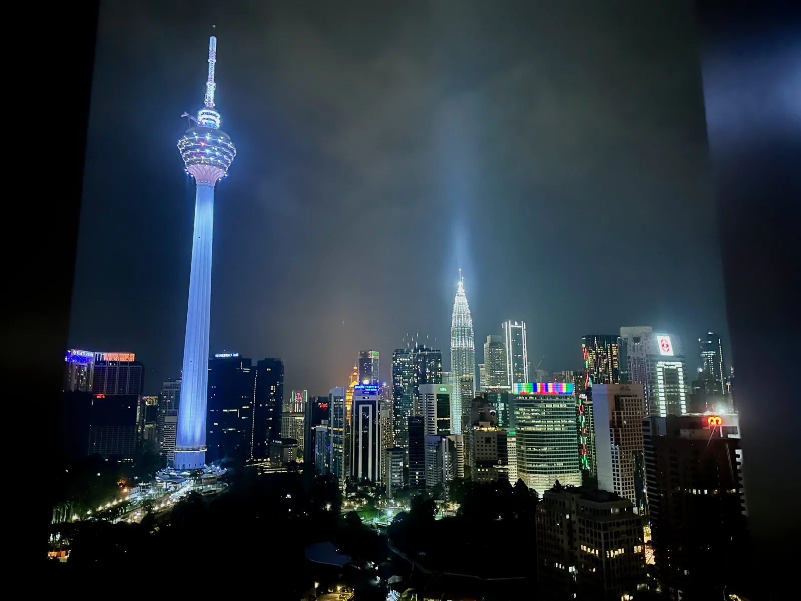
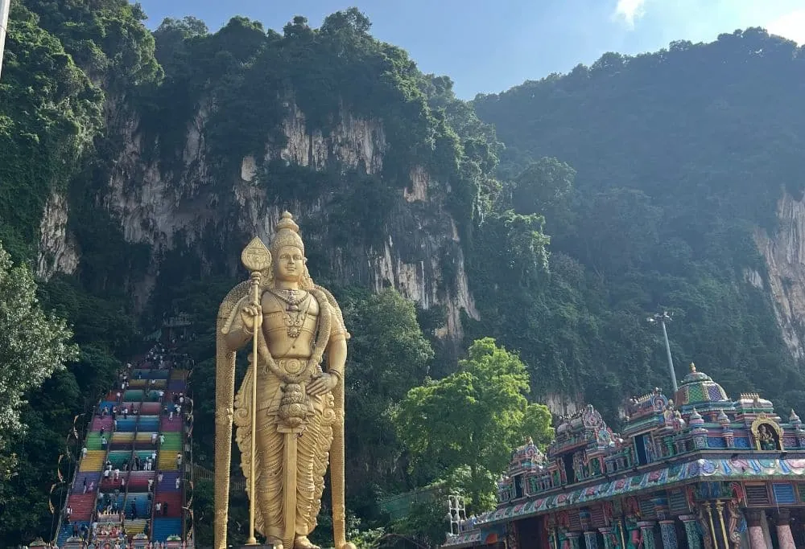

Michelin dinner anchor · Friday → Sunday city playbook
All 7 restaurants from the 2026 Michelin Guide KL & Penang — one 2★ and six 1★ — across a 2.5× price range. The restaurant cascades into neighbourhood, post-dinner logistics, and budget headroom.
| Restaurant | ★ | Price / person | Cuisine | District | Saturday hours |
|---|---|---|---|---|---|
|
Dewakan
top pick
Darren Teoh · Contemporary Malaysian · Michelin Green Star [19]
|
★★ | RM 870 nett | Contemporary Malaysian | KL Eco City | Dinner from 18:00 [2] |
|
Terra Dining
value pick
Chef Chong Yu Cheng · 11-course French × Malaysian · 2026 newcomer
◉ TTDI cluster
|
★ | RM 488++ | French × Malaysian | TTDI | Yes [3] |
|
Modern Malaysian · Marble goby, mud crab claypot rice · 48h cancellation
◉ TTDI cluster
|
★ | RM 588++ | Modern Malaysian | TTDI | Dinner + Sat lunch [6] |
|
Raymond Tham · Flora RM550 / Tour RM630 · RM300/pp hold required
|
★ | RM 550–630++ | Malaysian × French | Jalan Perak (KLCC adj.) | Tue–Sun 18:00–23:00 [4] |
|
Thai fine dining · 200-year-old tom yum variant · Hyogo oyster
|
★ | RM 600++ | Thai fine dining | Imbi | Yes [7] |
|
Multi-floor venue · Moonbar · Cellar omakase (8 seats, ~RM1,200)
◉ TTDI cluster
|
★ | RM 600–1,200 | European × Malaysian | TTDI | Dinner + Fri–Sat lunch [5] |
|
Opening of Year 2025 · Level 51 city views · Sat lunch available
|
★ | — | Mediterranean | Jalan Sultan Ismail | Tue–Sat from 18:00 [8] |
TTDI cluster: Akar, DC by Darren Chin, and Terra Dining sit within a 5-minute walk of each other in Taman Tun Dr Ismail. Any of the three makes post-dinner logistics trivial — Bangsar's bar strip is a short Grab away. Dewakan at KL Eco City pairs naturally with Marini's on 57 or SkyBar Traders for a nightcap. Beta KL in Chinatown puts you steps from PS150. [1]
A tight 60-hour structure. Saturday dinner is the fixed point. Everything else layers around it.

Stack a conference week before the leisure weekend. Professional ROI on the flight; leisure reward at the end.